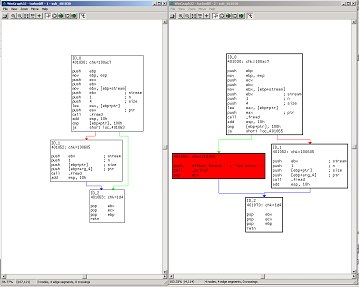

What is turbodiff?
Turbodiff is a binary diffing tool developed as an IDA plugin. It discovers and analyzes differences between the functions of two binaries.
Requirements
"Turbodiff 1.01 beta release 1" works with IDA starting from v5.0.
Instructions
For the binaries:
Download the plugin and store it at the directory "..\IDA\plugins".
If you want to compile it on your own: We have compiled it and tested it using Borland C. For the free version of IDA Pro (4.9) you'll need to first:
1. Generate the ida_free.lib library. To do this execute:
"implib -c ida_free.lib ida_free.def"
2. Next, you must have the linker use this library.
3. Compile.
Comparing two files:
- Open the first file to be compared with IDA and run /Option 1 (take info from this idb)/ from the plugin. Close.
- Open the second file to be compared with IDA and run /Option 1 (take info from this idb)/ from the plugin.
- Use /Option 2 (compare with...)/ from the plugin, and when prompted to select a file, select the first file. Chose if you want a log file to be genreated and run. Once finished a functions table will popup (watch Figure 1) describuing results. The results are then saved for later usage.
Accessing a comparison generated earlier:
- Open one of the files with IDA. Select /Option 3 ("Compare functions with...")/ from the plugin options and choose the other file to be compared. The table will popup without executing any new tasks.
Comparing any two functions:
- After comparing two files, you can compare any two functions between each by using /Option 4 ("Free comparison with...")/ and specifying the addresses of these actions.
Understanding the Output
The table
Each row represents two funct5ions that are being compared, and with 5 columns, category, address, name, address, name, where category describes the relationship between two functions, the 2nd and 3rd column describe address/name for the first function and the 4th and 5th columns describe address/name for the second function being compared.
The categories can be:
- identical:
- Same function graph;
- Same checksum in each basic block;
- Same amount of instructions in each basic block;
- suspicious+:
- Same function graph;
- /Different/ checksum in each basic block;
- Same amount of instructions in each basic block;
- suspicious++:
- Same function graph;
- /Different/ checksum in at least one basic block;
- /Different/ amount of instructions in at least one basic block;
- changed:
- None of the above;
- Related by an heuristic, as described in the presentation;
- unmatched:
- None of the above;
Colors for basic blocks when diffing functions
- white: Same checksum and number of instructions
- green: Same number of instructions
- yellow: Different number of instructions
- red: Basic block that the differ didn't match.

Downloads
- Stable release (1.01 beta release 1), updated on October 2, 2009. Sources and plugin
- Latest stable release (1.01 beta, r1, second build), updated on October 19, 2009:
- IDA, starting with version v5 Sources and plugin
- version for (free) IDA PRO v4.9 Sources and plugin
Known Issues
- There is an issue to be solved with the heuristics that produces false negatives when detecting identical functions. This will be solved by the next release.
Licensing
This software is provided under the GPLv2 license.
Contact Us
Whether you want to report a bug or give some suggestions on this package, drop us a few lines at oss- at -coresecurity.com or contact the author, Nicolas Economou, at neconomou@
Description
- Title
- turbodiff
- Release date
- 2009-10-08
- License type
- GPL v2.